“How might we allow people to create their own unique smart home interface?”
duration
8 weeks
solo project
ideation, and design concept
approach
gaining inspiration from history.
HyperCard is a multimedia authoring environment that empowered non-programmers to share
ideas using new interactive media called HyperCard stacks. This allowed users to define what they wanted
out of the system, offering a high degree of personalization.
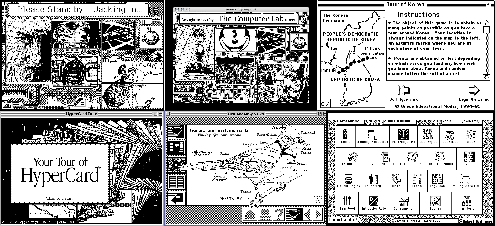
opportunities identified
customization and delight for smart home interfaces.
Looking into the different areas in which such personalization would be useful and
appreciated, I thought of smart home interfaces.
1. Smart home interfaces cannot truly offer you a way to customize the interface and interactions to
suit individual habits and routines.
2. Interfaces today are designed to make you feel less.
3. Interfaces are functional but rarely offer delight or relaxation.
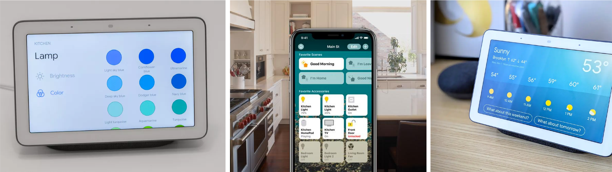
inspiration and design idea
disney’s touche sensor to recognize complex touch interactions.
Using Disney’s Touche sensor, we can convert any non-metallic surface into a touch
interface that is capable of recognizing a variety of complex touch interactions.
Using this consumers can have the option of creating their own interface out of any surface
(non-metallic) surface in their home to control smart devices / appliances.
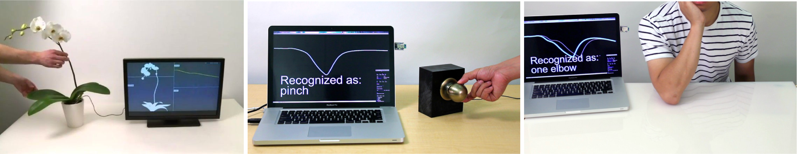
concept
attachable device turns surfaces into touch interfaces.
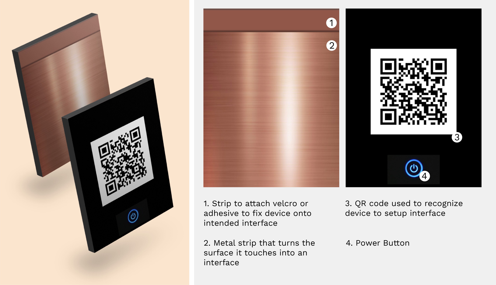
The device can be attached or inserted into to a wide variety of surfaces. Care must be
taken to place the metallic bronze side facing the surface you want to interface with.
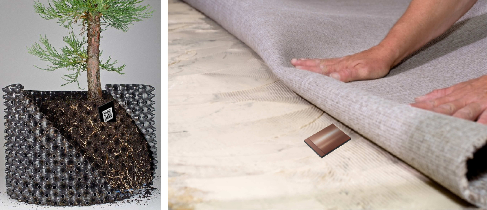
setting up the interactions.
Once the device is placed appropriately the app waits for the user to perform an
interaction it can detect. The screens shown are rough wireframes of what the steps involved are.
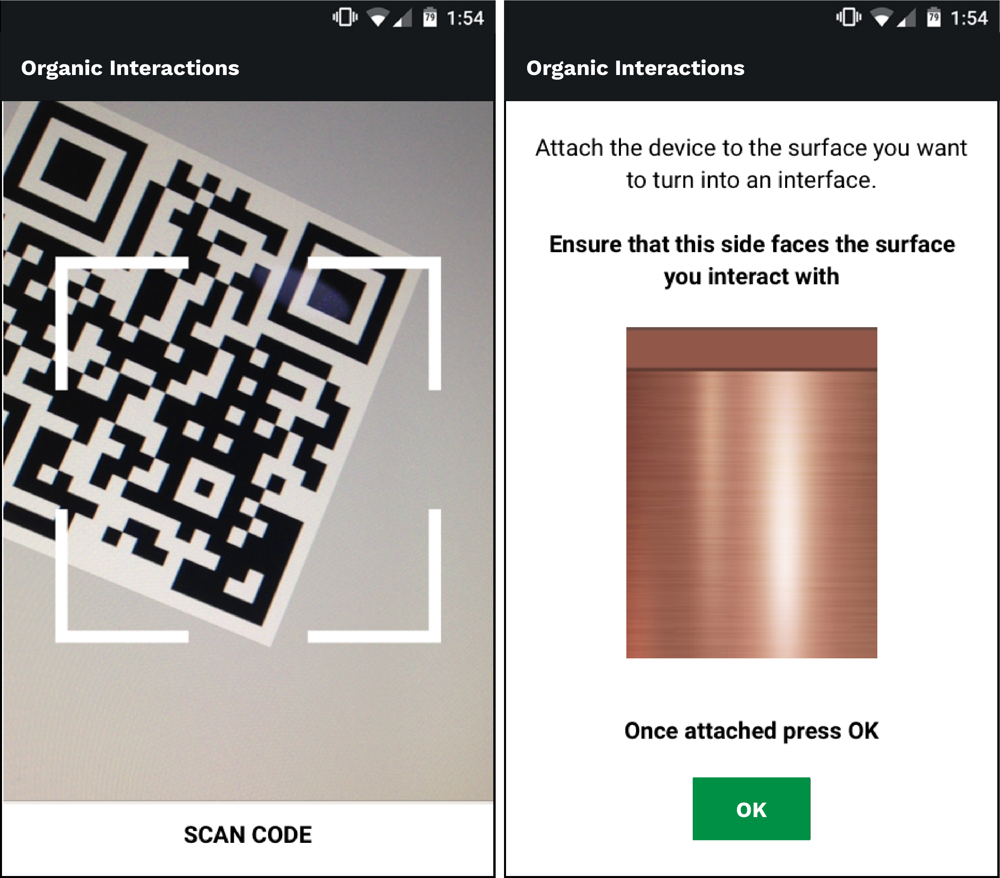
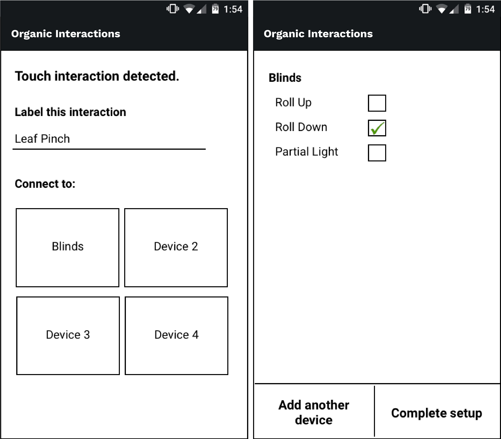
scenarios.
Scenario 1: Plant at bedside
Single interaction, multiple devices
On pinching a leaf:
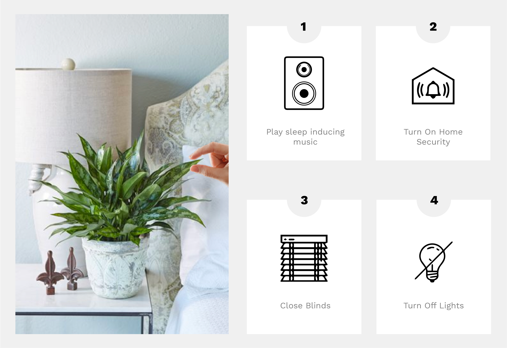
Scenario 2: Music player control with carpet
Multiple interactions, single device
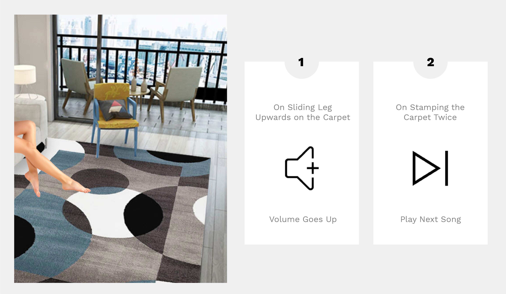
charging
remote charging through wifi or bluetooth.
The device will be equipped with a Remote Wireless Charging System.
Removes the pain of having to charge each of these modules every time, some of which might be places in
places that are hard to reach.
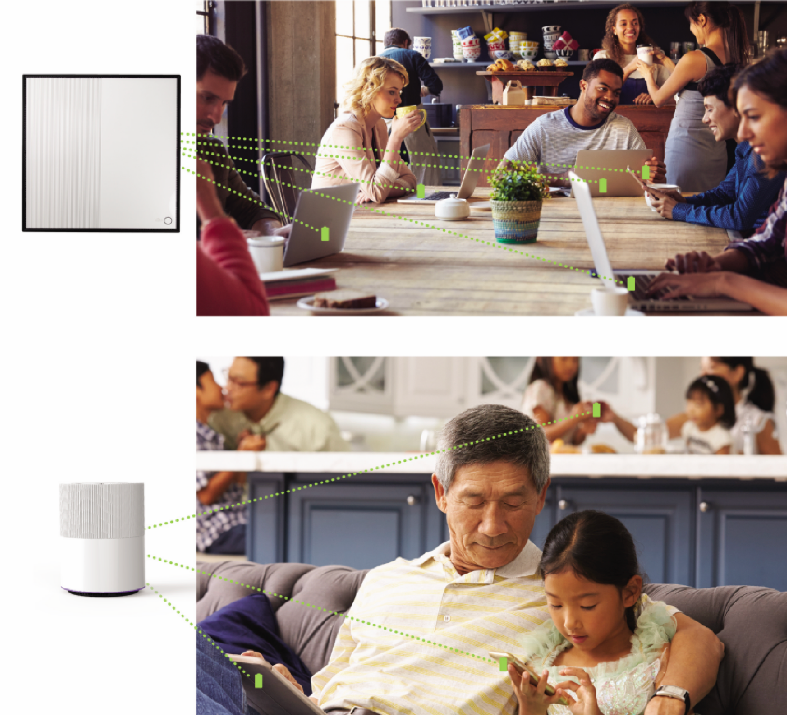
exploring a different perspective
if organic interactions was common.
I questioned what could be possible if organic interactions was a common sight in
households and in other domains. It has a lot of potential applications but focussing on the environment
surrounding the project in home interiors, I explored possible design interventions that would enhance
the experience.
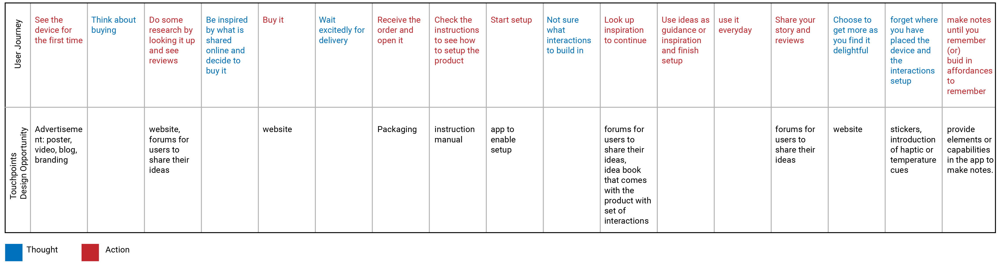
Among these 3 main concepts were selected to be further developed and moodboards were
created to explore design ideas.
1. Website landing page and online store to buy custom surfaces to let new users understand the product
and all the accompanying services.
2. Interaction inspiration for when the user is setting up the device.
3. Sample conversations between a new user and a customer service employee to showcase some possible
issues and potential solutions.
I created moodboards for these concepts as shown below.
1. Website
landing page and custom surfaces.
The focus of the designs were on the landing page and the ability to buy custom surfaces.
The goal was to showcase the possibilities this product and accompanyng experience offers.
I started with low fidelity wireframes to think through all the elements needed.
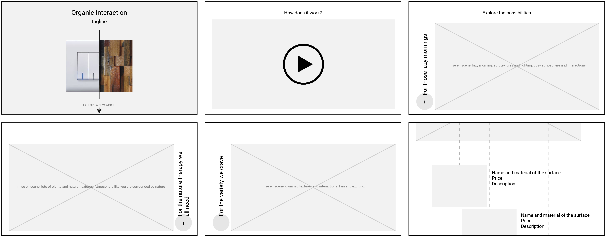
The first rough version of the design was then created as shown below.
Followng this I created and applied a style guide that would be the standard for all
future concepts. I also made changes to the way the content was presented based on feedback to better
convey the intended message.
The following is the final website design along with a video of the clickable prototype
2. Interaction Inspiration
suggestions on possible interactions the user can use.
This is a digital experience that is part of the setup sequence. While setting up the
device it prompts these suggestions when it is time to interact with the surface. You can choose to
explore or skip as you wish.
I started with low fidelity wireframes to think through all the elements needed.
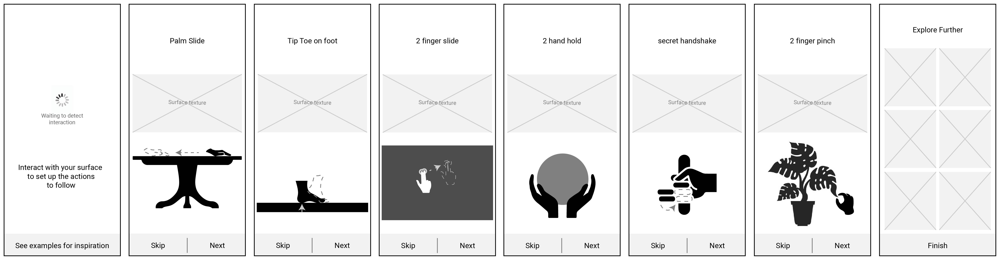
With these wireframes as a base and further changes the graphic style was applied to the
screens and a clickable prototype created. The following is a video of said prototype.
3. Sample Conversations
Users and Customer Service Employees.
The conversations take place within the help section of the website in the chatbox. The
following shows three different conversations that illustrate possible solutions to some common
problems.
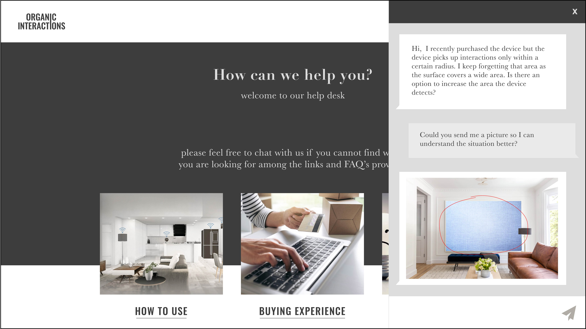
Conclusion
choice and added value.
1. This idea offers a way to transform any surface in your home into an
interface.
2. It provides more choice in texture, style, aesthetics and interactivity.
3. There is also the possibility to create an interface that has additional values like relaxation, fun,
and more for the user.
4. It opens up the possibility of exploring unique interactions that are not possible with traditional
interfaces.